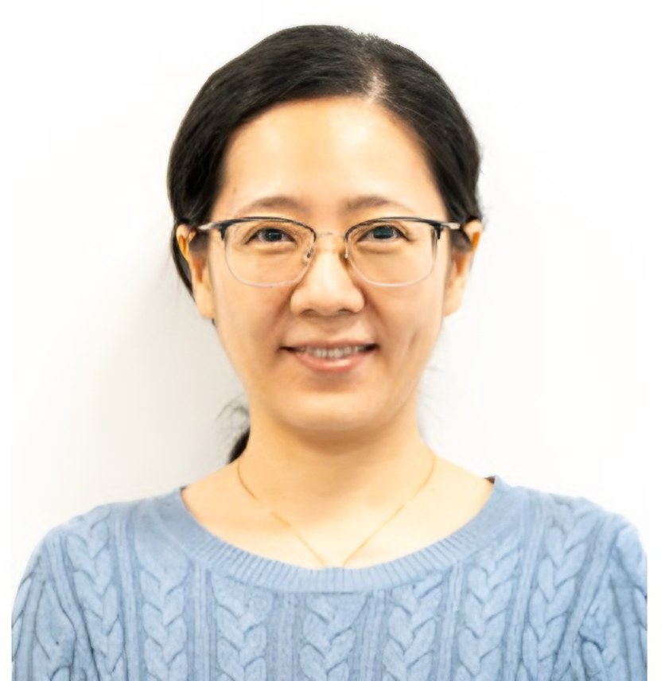

Facial Acupuncture
Drawing on her dermatology background, Yi uses fine needles on facial and body points to support skin tone, texture and a healthy glow. Gentle, with no downtime.
- Skin tone & texture
- Firmness & contour
- Fine lines & healthy aging
Registered Acupuncturist · Ottawa
Yi Zhang holds a Master's in Traditional Chinese Medicine from Beijing University of Chinese Medicine and has over ten years of clinical experience. She sees clients at several locations in Orléans and Gloucester, offering acupuncture, facial acupuncture, cupping, guasha and moxibustion in English and Mandarin.

About
Yi Zhang completed seven years of formal training at Beijing University of Chinese Medicine, earning both her Bachelor's and Master's degrees in Traditional Chinese Medicine, and has focused on acupuncture and TCM practice for over a decade.
She believes the body has a natural capacity to regulate itself, and that treatment is about helping it find its balance again. Her years in the dermatology department of Beijing Hospital of TCM sparked a lasting passion for skin health and facial acupuncture, helping clients feel better from the inside out.
Beijing University of Chinese Medicine · Bachelor's & Master's in TCM (2012)
Former physician, Dermatology Department, Beijing Hospital of TCM
Registered Acupuncturist in Ontario (since 2021)
English and Mandarin
Services
Every treatment begins with understanding your health and goals, so your plan fits you.
Drawing on her dermatology background, Yi uses fine needles on facial and body points to support skin tone, texture and a healthy glow. Gentle, with no downtime.
For neck, shoulder, back and joint discomfort, and activity-related strain.
Supports relaxation, better sleep and relief from everyday stress.
TCM support for women through every stage of life.
Constitution-based care for digestion, general wellbeing and seasonal balance.
Used alongside acupuncture or on their own, as needed.
Therapies
Single-use sterile fine needles stimulate specific points to promote the flow of qi and blood.
Gentle suction on the skin encourages local circulation and eases muscle tension.
A smooth tool is stroked along the skin to relax muscles and move qi and blood.
Warming mugwort over acupoints to dispel cold, often helpful for those who feel cold or depleted.
Your Visit
Choose the location that suits you best and pick a time online, with instant confirmation.
We discuss your health history and goals, with a TCM assessment including tongue and pulse.
Your treatment takes place in a calm, comfortable setting, and you can share how you feel at any point.
You'll receive lifestyle and diet suggestions, and together we'll plan next steps.
FAQ
Have another question? Add a note when booking and we'll get back to you before your visit.
Acupuncture needles are extremely fine, far thinner than injection needles. Most people feel only a slight sensation on insertion, sometimes followed by a dull ache, warmth or heaviness. Many clients relax enough to fall asleep.
All needles are single-use, sterile and disposed of after each treatment. Yi is a Registered Acupuncturist in Ontario and follows provincial practice and safety standards. Please let us know if you are pregnant, take blood thinners or have other health conditions.
Wear loose, comfortable clothing and have a light meal beforehand; avoid coming hungry or overly full. For facial acupuncture, please come without makeup if possible.
It depends on your condition, how long you've had it and how your body responds. After your first assessment, we'll discuss a frequency and plan that suits you.
Many extended health benefit plans cover services by a Registered Acupuncturist; please check your coverage with your insurer. At Bellefleur, The Massage Therapy Company and New Life, the clinic can bill most insurers directly. At the private studio, you'll receive an official receipt to submit yourself.
Locations
Tap “Book” to see her availability at each location.
Orléans
Orléans
Orléans
Gloucester
Pricing and hours may vary by clinic; please see each booking page for details.